Simultaan tegen gebroeders Dreelinckx
Vrijdag 28/08/2026
Hanske De Schaker opent het nieuwe seizoen met een simultaan tegen de gebroeders Dreelinckx.
Zeer scherpe partijen om te eindigen, maar finaal 4 remises op 24 partijen:
Frank Vermeulen, Lucas Busselen, Rafael Kucsicsa en Frederik Roels.
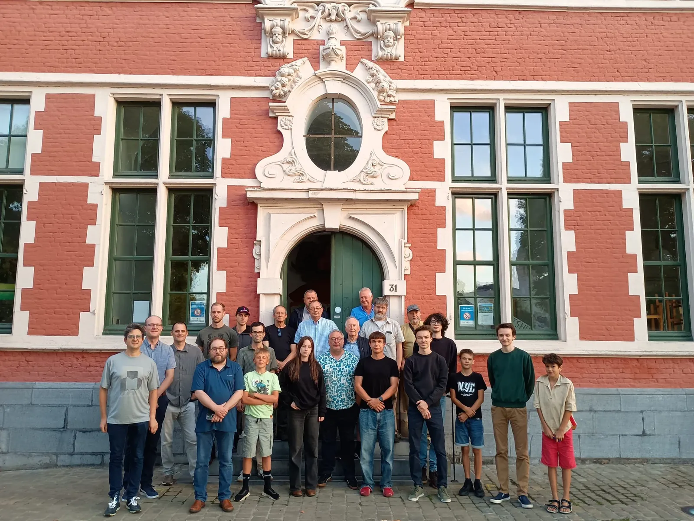
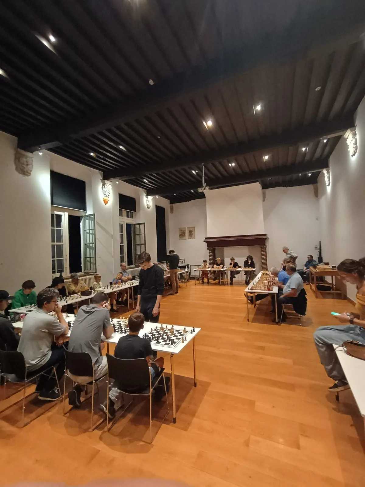
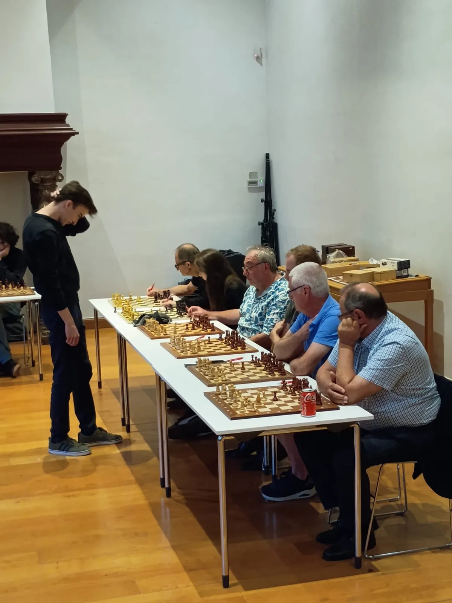
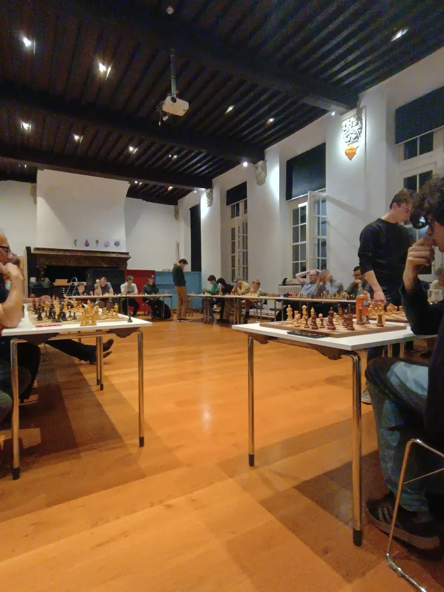
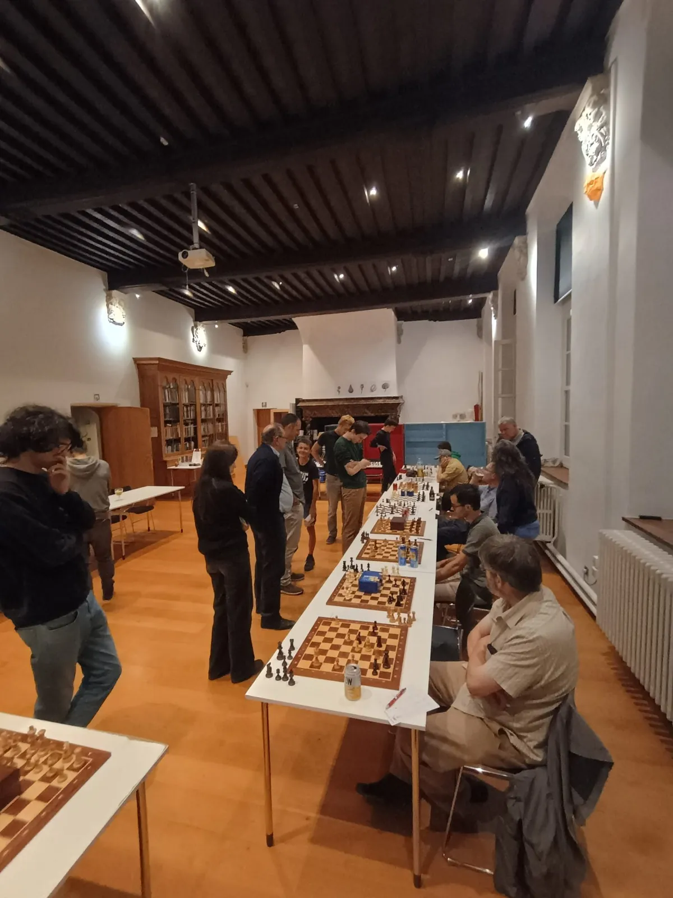
Kampioenen gehuldigd op het stadhuis!
Vrijdag 12/06/2026
Een prachtig moment voor onze club! Na een fantastische sportieve prestatie werden de spelers van Hanske De Schaker feestelijk ontvangen op het stadhuis van Oudenaarde.
Een officiële huldiging door het stadsbestuur is de ultieme kers op de taart na een succesvol seizoen.
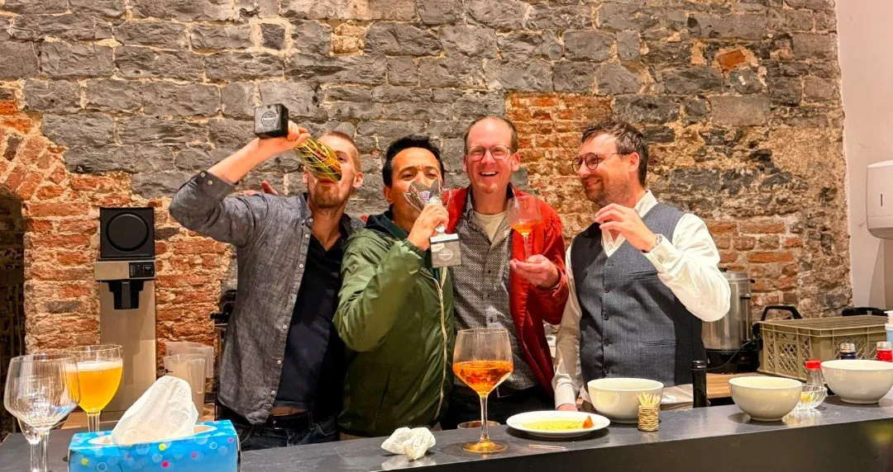
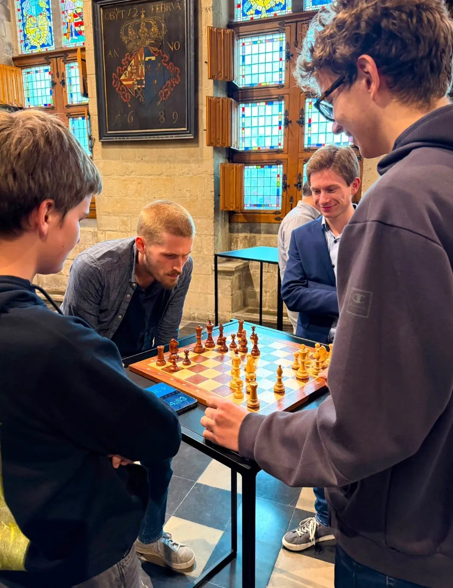
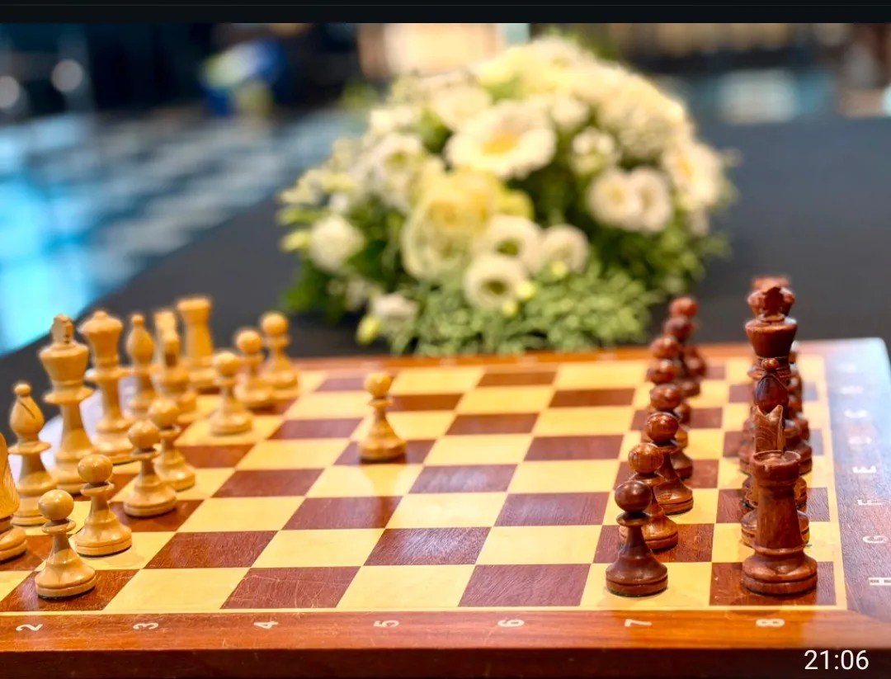
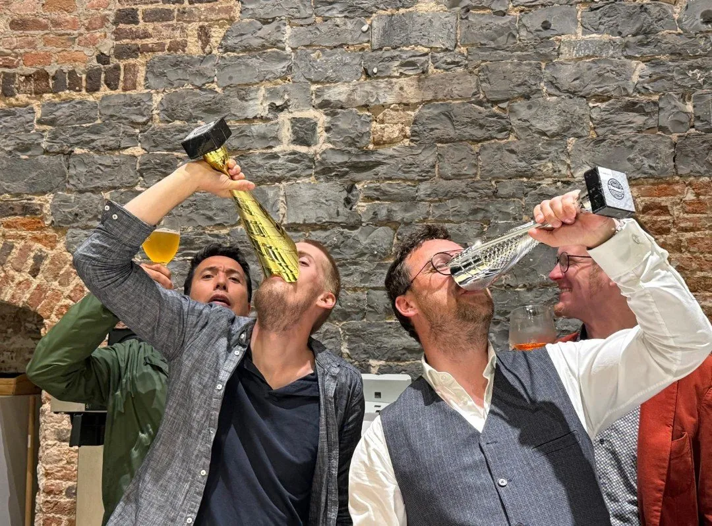
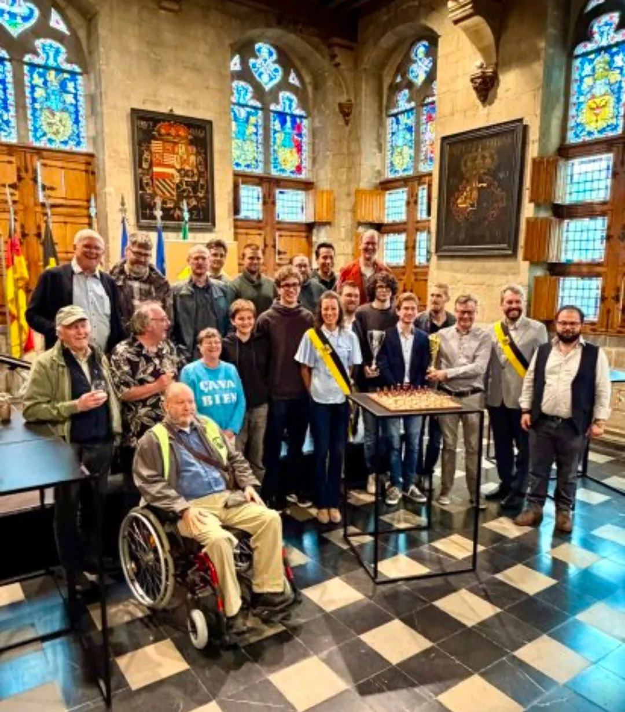
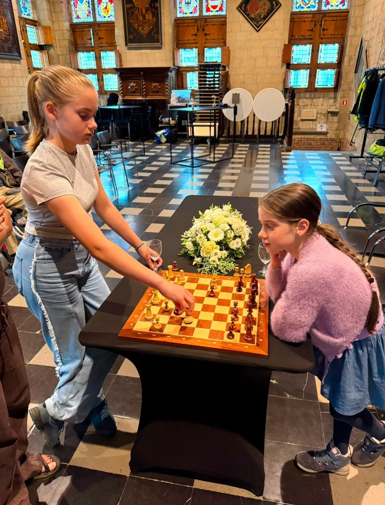